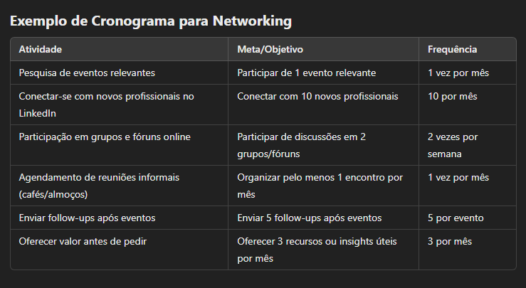

0:00 - 0:20 | Importância do Empreendedorismo
- O que é o Empreendedorismo?
- Empreendedorismo é o processo de criar e desenvolver novos negócios, com o objetivo de oferecer produtos ou serviços inovadores e agregar valor à sociedade. Ele envolve não apenas a criação de novos produtos, mas também a solução de problemas e a transformação de ideias em oportunidades.
- Importância para a Economia: O empreendedorismo impulsiona a economia, gerando novos empregos, criando inovação e competindo com grandes empresas. Ele também fomenta o desenvolvimento social e o avanço tecnológico.
- Impacto Social e Cultural: Empreendedores são agentes de mudança, introduzindo novas soluções para os problemas da sociedade e contribuindo para a diversidade e inclusão. Eles desempenham um papel vital na transformação das comunidades e no aumento do bem-estar social.
- Empreendedorismo como Motor de Inovação:
- Empreendedores são os principais responsáveis por trazer inovações para o mercado, seja por meio de novos produtos, serviços ou modelos de negócios. Eles desafiam o status quo e buscam criar soluções mais eficientes e acessíveis para os consumidores.
0:20 - 0:40 | As Tendências do Empreendedorismo
- Globalização
- Com o avanço da tecnologia, empreender se tornou mais fácil, independente de onde você mora ou trabalha.
- Qualquer empreendedor, em qualquer parte do mundo, com uma boa ideia e uma boa conexão com a internet, pode entrar na briga por um mercado, e por isso há maior competição.
- Império do Software
- Software são aplicativos e bens tecnológicos que não podemos segurar fisicamente falando.
- As máquinas tomaram conta das linhas de produção, pois fazem o trabalho mais rápido, têm mais força que os humanos e maior durabilidade.
- Atualmente, nos deparamos com a realidade das Inteligências Artificiais, que nos auxiliam em tudo, seja como nos vestir, o que comprar, como nos comportar. Existe um app para tudo!
- Você pode se alinhar à tecnologia e usar isso a seu favor, ou tentar ir no sentido contrário, utilizando sua experiência para criar outras soluções não diretamente relacionadas com a tecnologia.
- Economia da experiência
- Nem só de celular viverá o homem. O smartphone pode fazer muito, mas não oferece empatia, criatividade, afetividade.
- No mercado sempre haverá espaço para trabalhos feitos à mão, turismo, comidas típicas e autenticidade.
- Formação de identidade
- Lugares que auxiliam as pessoas a se descobrirem e se auto conhecerem também são espaços de vantagem empreendedora.
- Hoje, o mundo está mais flexível para que possamos escolher quem vamos ser. Direcionar as pessoas pode ser vantajoso.
- Corpos tecnológicos
- Parece ficção científica, mas há pesquisas reais sobre como aprimorar o ser humano.
- Futuramente, será uma área enorme, pensando na possibilidade de não só desenvolver pessoas, mas também na genética dos próximos bebês a fim de evitar doenças.
- Cidadãos engajados
- Muitas pessoas desejam lutar pelos próprios direitos. Quando essas pessoas se encontram, o resultado é muito relevante.
- Se tratando de política, sabemos que nem todos recebem aquilo que precisam. Por isso, se o governo não faz, os cidadãos cobram.
- Millennials
- Também conhecidos como Geração Y, são os indivíduos nascidos aproximadamente entre 1981 e 1996, embora as datas exatas possam variar um pouco dependendo da fonte.
- São uma geração complexa, com uma forte conexão com a tecnologia, grandes valores sociais e ambientais, e uma busca constante por equilíbrio e propósito em suas vidas.
- Embora enfrentem desafios econômicos e sociais significativos, eles continuam a ser uma força transformadora no mercado de trabalho e na sociedade.
- Sua adaptação às novas tecnologias e seu estilo de vida focado em experiências e bem-estar têm moldado profundamente a forma como as empresas se relacionam com os consumidores e como as sociedades estão estruturadas.
0:40 - 1:00 | Networking: A Chave para o Sucesso Empreendedor
- O que é Networking?
- Networking é o processo de estabelecer e manter relacionamentos profissionais, com o objetivo de trocar informações, conhecimentos e oportunidades de negócios. Esse processo é essencial para os empreendedores, pois amplia a visibilidade, cria parcerias estratégicas e facilita o acesso a recursos importantes.
- Benefícios do Networking para Empreendedores:
- Geração de Oportunidades: Ao construir uma rede sólida de contatos, os empreendedores têm acesso a oportunidades de parcerias, investimentos e novos mercados.
- Aconselhamento e Mentoria: O networking permite o acesso a conselhos valiosos de pessoas experientes, que podem orientar o empreendedor nas fases iniciais ou durante a escalabilidade do negócio.
- Fortalecimento de Credibilidade: Através do networking, o empreendedor pode construir uma reputação no mercado, o que é fundamental para atrair clientes e parceiros comerciais.
- Como Construir uma Rede de Networking Efetiva:
- Participar de eventos e conferências de sua área de atuação, como feiras e meetups.
- Estabelecer uma presença ativa nas redes sociais, especialmente no LinkedIn, para interagir com outros profissionais.
- Manter a qualidade das relações, não apenas o número de contatos, oferecendo apoio e valor para seus contatos profissionais.
1:00 - 1:30 | Exercício Prático: Como Construir um Networking de Sucesso
- Exercício:
- Os participantes serão convidados a criar um plano de networking, com metas de como aumentar sua rede de contatos, identificar eventos relevantes e estabelecer novas conexões de forma estratégica. Além disso, devem desenvolver um pitch pessoal para se apresentar de forma eficaz durante eventos de networking.
- Como fazer o Exercício:
- Defina seus objetivos de networking
- Antes de sair em busca de novas conexões, é importante estabelecer o que você espera alcançar com o networking.
- Objetivos podem incluir conseguir novas oportunidades de emprego, encontrar parceiros de negócios, aumentar a visibilidade da marca pessoal, entre outros.
- Exemplo de meta: Definir pelo menos 3 objetivos principais de networking para o próximo semestre.
- Estabeleça uma estratégia de conexão online e offline
- Networking Online
- Aprimorar seu perfil no LinkedIn, conectar-se com novos profissionais e participar de discussões em grupos.
- Meta: Conectar-se com 10 novos profissionais por mês e participar de pelo menos 2 discussões por semana.
- Networking Offline
- Participar de eventos presenciais e agendar reuniões informais com novos contatos.
- Meta: Participar de pelo menos 1 evento relevante por mês e organizar 1 reunião por mês.
- Identifique eventos relevantes
- Pesquise eventos online, consulte associações profissionais e assine newsletters especializadas.
- Meta: Participar de eventos que ofereçam ao menos 3 oportunidades claras de networking ou aprendizado.
- Estabeleça novas conexões de forma estratégica
- Qualifique suas conexões, pesquise sobre as pessoas antes de interagir e adote a abordagem de “dar antes de pedir”.
- Meta: Oferecer um recurso ou insight útil para pelo menos 3 contatos novos por mês e enviar follow-ups após eventos.
- Organize e acompanhe sua rede
- Crie categorias para suas conexões e use uma planilha ou ferramenta de CRM para organizar e monitorar seu progresso.
- Meta: Criar um sistema simples para rastrear e categorizar suas conexões até o final do mês e revisar seus objetivos de networking trimestralmente.
- Avaliação e ajuste de metas
- Avalie trimestralmente como o networking tem impactado sua vida profissional e ajuste as metas conforme necessário.
- Meta: Ajustar suas metas de networking a cada 3 meses, garantindo que estejam alinhadas com seus objetivos profissionais de longo prazo.

1:30 - 1:50 | Discussão: Como Aplicar as Tendências de Empreendedorismo e Networking em Seu Negócio
- Discussão Aberta:
- Os participantes compartilharão suas ideias e dúvidas sobre as tendências de empreendedorismo que mais se alinham com seus projetos, além de discutir como aplicar o networking de forma prática em seus negócios.
1:50 - 2:00 | Dúvidas e Considerações Finais
- Dúvidas:
- Espaço para os participantes esclarecerem dúvidas sobre os conceitos discutidos durante a sessão e como implementá-los de forma prática no seu dia a dia de empreendedor.
- Considerações Finais:
- Reflexão sobre a importância de se manter atualizado sobre as tendências do empreendedorismo e como o networking bem feito pode ser uma ferramenta poderosa no sucesso de um negócio.